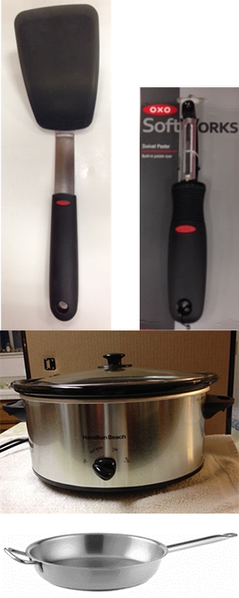
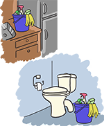
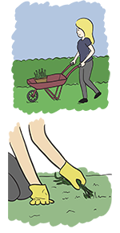

Module: Activities of Daily Living
Janet L. Poole, PhD, OTR/L
Resources
Tools and adaptive gadgets to help with scleroderma
Identify activities you’d like to do more easily and strategize with this printout.
Printout PDFActivity plan to improve ease in performing daily tasks
Identify activities you’d like to do more easily and strategize with this printout.
Printout PDFHome Management: Cooking, Cleaning, etc.
Many household tasks require strength, endurance, and hand function that can be limited in persons with scleroderma. The following suggestions may help make these tasks easier. See the module on Fatigue and Energy Conservation for other energy-saving tips.
Cooking

- If it is hard for you to reach high up (e.g. into cupboards) or low (e.g. to reach the floor or your feet), try these tips:
- Kitchen tools with built-up handles are available at stores such as department stores.
- A speaker phone in the kitchen allows you to talk without holding the headset. A portable or cell phone lets you to move about and can be used to get help, if needed.
- Consider shopping by phone and computer to save energy.
- Use electrical appliances, such as food processors, blenders, microwaves, crockpots, and dishwashers. Make sure you store these in a way that allows you to use them easily.
- Double-handed cookware lets you use both hands to get a better grip.
- Use non-stick and lightweight cooking utensils.
- Use non-stick spray or line baking pans with aluminum foil to keep clean-up simple.
- Serve food in the same container in which it was fixed.
- Keep oven mitts near your stove and refrigerator. Consider an oven-rack pull if it is hard for you to pull the racks out of your oven.
- Use convenience foods, such as quick mixes and frozen and microwavable meals.
- If you do like to cook, prepare extra food so you have leftovers.
- Store leftovers in easy-to-open containers, like Ziploc or Glad disposable containers.
- Use precut fruits, vegetables, and salad mix.
- Delegate tasks to family members.
Cleaning

- Store a separate set of cleaning supplies in each bathroom, the kitchen, the laundry room, etc., especially if you have a two-story house. Or use a utility cart to carry supplies from room to room.
- Use liquid pump antibacterial soaps in the bathrooms and kitchen.
- Only do one major cleaning task a day.
- Use long-handled tools for reaching to clean the tub or toilet. Swiffer makes long-handled tools for dusting, mopping, and cleaning.
Outside the house

- Use a wheelbarrow, basket, or toolbox to carry equipment.
- Sit on a chair to do garden work. Or create easy access by gardening in small containers or raised beds.
- Weed after it rains or after the garden has been watered, so the soil is damp.
- Wear gloves to protect your skin from cuts, blisters, and bacteria from soil, thorns, etc.
- Use power tools.
- Use fat-handled tools. Adapt handles as suggested in the Eating section of this module.